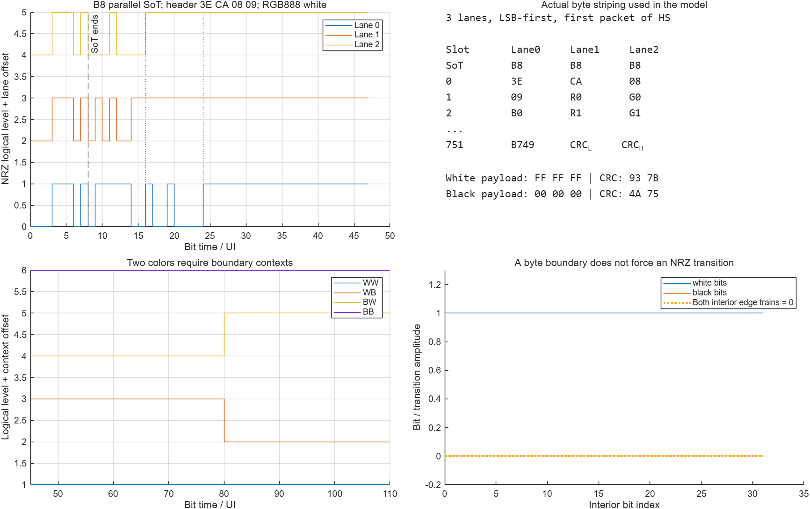
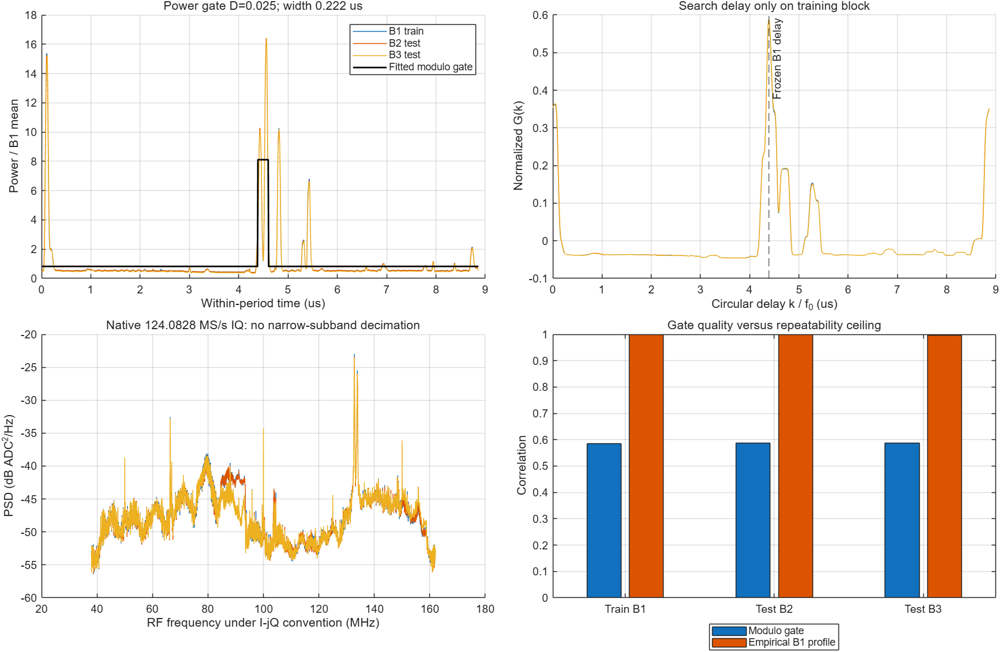
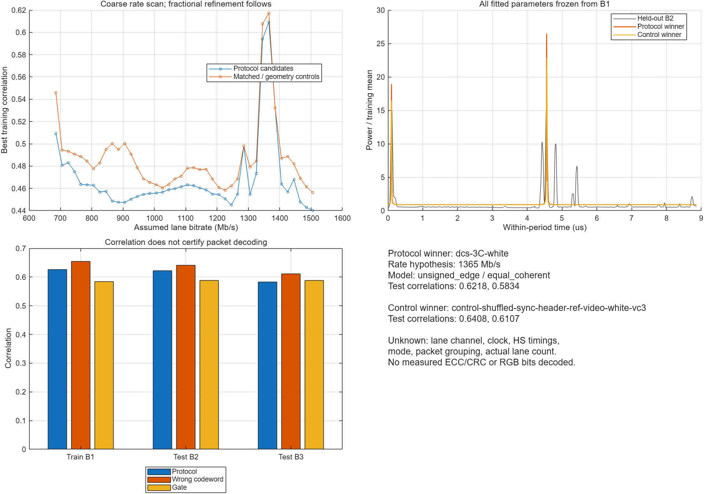
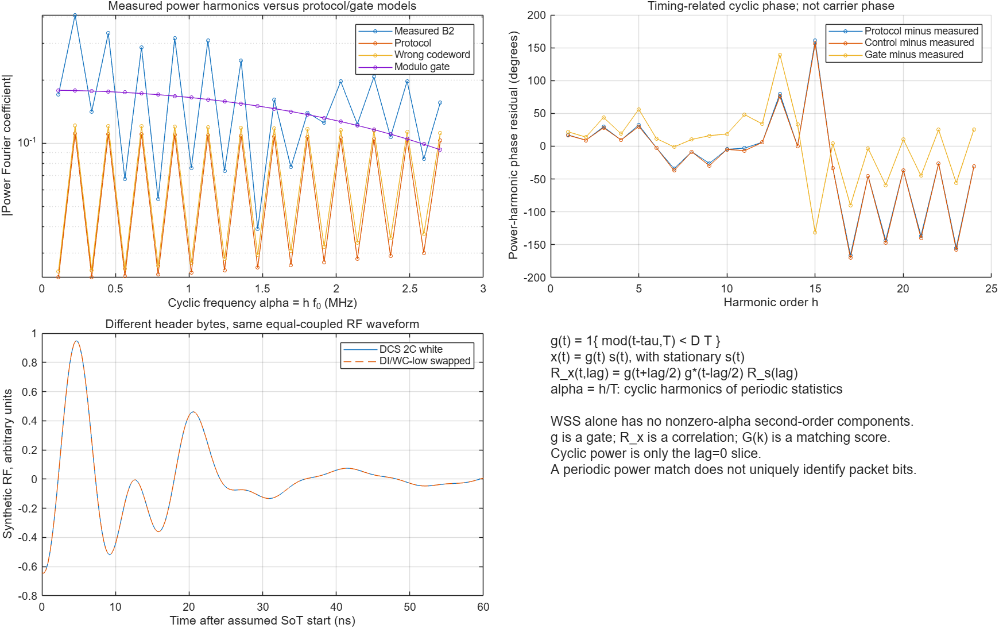
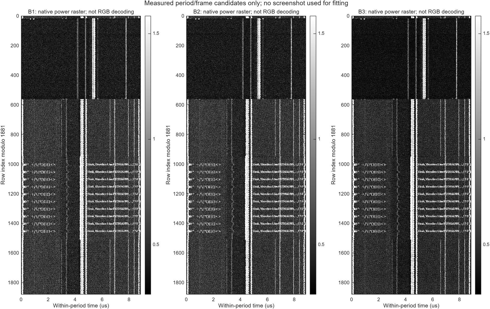

프로토콜 codebook → RF template → 실측 검증
iPhone 6 fc100 MHz 녹음에 RGB888·3 data lane·byte round-robin 가정을 적용했습니다. 논리 codeword 60개와 방사·속도 후보를 비교하고, 학습에 쓰지 않은 두 시간 구간에서 확인했습니다.
1. 실제로 생성한 3-lane codebook
Video VC0 / 750 pixels: 3E CA 08 09. 헤더 offset을 반영하면 R→lane1, G→lane2, B→lane0이며 B는 한 byte-clock 늦습니다. B8 SoT는 세 lane에서 병렬로 시작합니다. DCS 2C/3C mode도 별도 후보로 넣었습니다.

흰색·검정만 계속되면 내부 NRZ 전이는 둘 다 0일 수 있습니다. 따라서 WW/WB/BW/BB 경계 context와 header/CRC를 함께 만들었습니다.
2. modulo g[n]과 G(k)
g[n] = 1{ 0 ≤ ((n/Fs − τ) mod T) < D·T }
p[n] ≈ Poff + (Pon − Poff)·g[n]
G(k) = corr(template[j], measured_profile[j+k])
T = 8.865047805 μs; α = h/Tg는 gate, R은 자기상관, G(k)는 지연 정합 점수입니다. 비영 α 성분의 근거는 2차 cyclostationarity이며 WSS 자체와 구분합니다. gate가 잘 맞더라도 byte열이 유일하게 정해지지는 않습니다.

찾은 0.221626 μs 폭은 큰 전력 lobe의 근사입니다. 이를 실제 HS payload 길이로 채택하지 않았습니다.
3. 무엇을 고정하고 비교했나
124.0828 MS/s 원본 IQ의 0.2, 1.1, 1.8초 구간을 각각 약135 ms 분석했습니다. B1만 학습, B2/B3는 검증입니다. 15,120개 coarse 비교 후 후보별 지연을 0.503696 ns 간격으로 세밀하게 맞췄습니다. 이는 template delay 조정이며 원본의 CFO나 clock 보정을 수행한 것은 아닙니다.
논리 비트 → lane NRZ/전이 → 40–160 MHz 대역 제한 → 복소 파형 표본화 → 전력 → 실제 phase-bin 분포 순서입니다. 실제 lane 채널·HS timing·clock 방사는 아직 미확정입니다.
| 대상 | B1 학습 | B2 검증 | B3 검증 |
|---|---|---|---|
| 경험적 전력 profile | 1.0000 | 0.9997 | 0.9964 |
| modulo 전력 gate | 0.5844 | 0.5878 | 0.5883 |
| 유효 protocol 최적 후보 | 0.6258 | 0.6218 | 0.5834 |
| 잘못된 codeword 최적 후보 | 0.6545 | 0.6408 | 0.6107 |
| 유효 후보의 DI/WC-low 교환 | 0.6258 | 0.6218 | 0.5834 |

1365 Mb/s 최적점은 rate bank의 가설값입니다. 시작·끝 간격에도 맞는 값이므로 측정 bitrate 또는 DCS mode 식별 결과로 채택하지 않았습니다.
4. 구별되지 않는 이유를 수치로 확인
특정 header의 DI와 WC-low를 교환해도 equal-coupled lane 합은 같은 RF 파형을 만듭니다. 상대오차는 약3×10⁻¹⁶입니다. 또한 세밀한 RF grid·sample-phase 분할·독립 보간법으로 재검증해도 위 순위는 바뀌지 않았습니다.

위상은 전력 harmonic의 cyclic 위상입니다. RF carrier 위상이나 RGB hue가 아닙니다. 이 그림은 이전 FAM에서 정한 f0를 사용한 folded-power Fourier 분석입니다.
5. 원본 데이터에서 보이는 화면 구조
실측 전력을 주기·1881-row frame 가설로 쌓으면 세 구간 모두 문자 줄 구조가 나타납니다. 가로축은 주기 내 시간이며, 아직750pixel의 byte decoding 결과가 아닙니다. 원본 스크린샷을 fitting이나 화면 채우기에 사용하지 않았습니다.

참조 PNG의95.57%는 정확한 흰색 또는 검정, 4.43%는 회색입니다. 흑백 근사는 유용하며 antialiasing은 추가 codeword/잔차로 남깁니다.
재현과 다음 관측량
addpath('signal_processing')
book = buildDsi3LaneCodebook27();
out = fullfile(pwd,'results','new_unique_codebook_run');
report = applyDsi3LaneCodebook27(out);
audit = auditDsiCodebook27(out);다음 단계는 row 상태별 분리와 비영 lag의 복소 cyclic autocorrelation입니다. 제한된 lane 채널과 packet 경계를 함께 맞추고, header가 단순 HS/clock 경계보다 추가 정보를 주는지 검증해야 합니다.